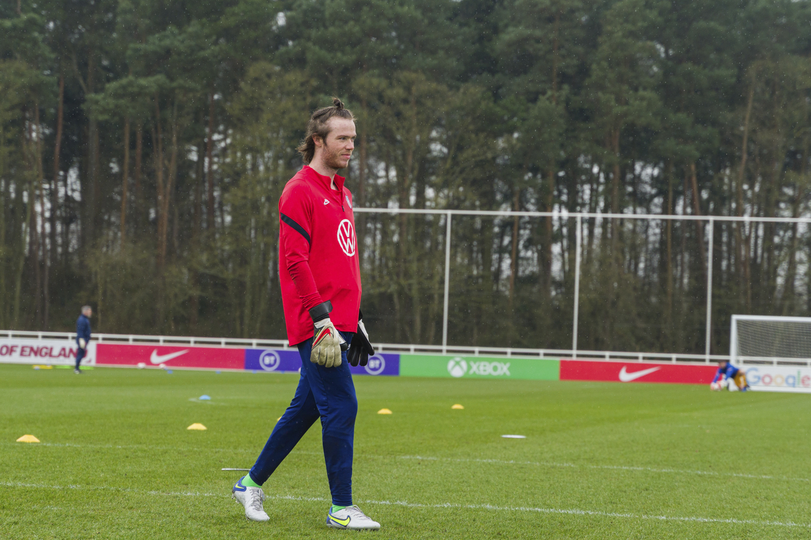

Hello! My name is Carter. I'm building this website for fun. I think that HTML is a cool language. Feel free to browse this website to learn more about someone you may never meet.

This is me at a Cerebral Palsy (CP) soccer friendly in England. We played against Scotland and England's senior and U-21 teams. (Credit to Buzz Meade for the photo)
Important quotes, sayings, etc.
- "Life is very short and what we have to do must be done in the now." -Audrey Lorde
- "Fortune favors the bold." -Latin proverb
- "Fear is the mind killer..." -Bene Gesserit Proverb from Frank Herbert's Dune
- "You can do this" -me
- "A bird in the hand is worth two in the bush." -John Capgrave
- "There is nothing either good or bad, but thinking makes it so." -Shakespeare
Carter's favorite colors
- blue
- purple
- magenta
- the purple that shifts into yellow in a sunset
- yellow
- black
My favorite books
- The Alchemist by Paolo Coelho
- Dune by Frank Herbert
- Atomic Habits by James Clear
- I'm Glad my Mom Died by Jennette McCurdy
Interests
I'm interested in a lot of stuff. Most of all, though, I'm interested in exploration.
To me, exploration means actively experiencing new situations to determine my interest in them. This past weekend my friends Jonah, Bryson and I went to a fun place that did games that were like real world video games. It was loads of fun. Through this habit of intentional exploration, I have discovered that I enjoy:
- reading
- cycling
- jogging around my neighborhood
- playing sports
- soccer
- basketball
- team handball
- chess
- hiking (in small doses)
- photography
- writing
- computer programming
- learning new languages
- Team building games with my close friends
- spending time with my family
- cooking
- record keeping
- Self reflection and guided reflection
- speculative discussion
- roller coasters/theme parks
- science
- religion
- and philosophy.
I'm also always wanting to extend this list, so if you have any ideas, you'd like to hear my expericence with, let me know.
Fears
Yes, I am afraid of things. I'm not going to pretend like I'm not. In part, I like exploration so I can conquer my fears. A likely incomprehensive list follows:
- Heights- I falter with this one. I can do heights. For example, I enjoy roller coasters a lot. Whenver I am at any large height, though, I get an overwhelming sense of dread and fear.
- Insects- Insects fascinate me. But only from a distance. If I feel like they are going to touch me I get another overwhelming sense of nervousness. I can trap them, but I feel no desire to touch them. I do not know why I feel afraid of insects.
- Embarrassing Myself- I often stop myself from getting involved in conversations with people I do not know because I am afraid that I will embarass myself. This actually hurts me significantly.
Jobs I have had
- dishwasher
- cook
- groundskeeper
- server
- high school teacher
- college tutor
- janitor for a park
- house renovator
Photography

^ I like the color in this shot.

^ The way the body stretches for the ball looks in this photo pleases me.

^ Just a nice shot, I think.

A coffee cup or an alien abduction?


Possibly senseless meanderings
12/18/2022
I've found goal-setting to be a positive and negative aspect for accomplishing goals. You see, goals are difficult to set for me because I feel that the future is unpredictable. I have and still attempt to set goals, but if they are any longer than a week or so it's difficult for me to accomplish them. I chatted with my friend Bryson while on a run today and I'm in a somewhat sticky situation. I currently have three goals: #1 move out of my parents' house, #2 attend and complete graduate school, and #3 get a job that pays good money. To the untrained eye it may seem like I do have specific long-term goals, but to my eyes there's one problem. Making moves towards any one of these goals postpones completion of the others. My friends, I have been caught by a case of choice paralysis. This feels like one of those moments where the best move is just to dive right into the deep end and learn from my mistakes as I go, but I'm biding my time to see if I can come up with a better option. One thing I've learned from playing chess with my friends, though, is that if you bide your time for too long, you lose your chance (and the game). Check back in after a few days' time to see how the Chronicles of Carter Alvey play out...
12/17/2022
Today I was a host at the pizza joint where I work. To be honest, the restaurant business isn't really my favorite industry, but I have a decent amount of experience with it and serving can earn you some pretty good change. This place is not exactly like what I've done in the past, but the job is easy enough and it's good for a temporary gig. For me, while I'm looking for a career I'm looking at a few things: #1: I'm trying to determine whether or not I enjoy solving the problems that arise in that job. I've stopped looking for a job that doesn't have any problems; if those do exist, they are rare. #2: I look for whether the job utilizes my strengths enough. For example, I would consider myself to be a versatile employee, so if I'm in a position where I'm not able to use my versatility, such as in my park janitor job, I find a lack of fulfillment. There are other factors that I consider, like who will I be working with, where is the job located, are there opportunities for advancement within the company, and more. Though, to start this out, and to keep this entry brief, I look for two things in a career: 1) Do I like solving the problems? 2) Are my strengths being utilized?
12/16/2022
I'm thinking of different ideas for what to do with thi website. My dad suggested that I report on science news because I really like science. I thought that would be fun for a while but I'd also like to do other stuff. I don't know if I want this to be a blog, but keeping trak of my journey in this could be fun. Another thing that was suggested to me by my friend Jonah is to catalog my career journey. I've had a somewhat difficult time figuring out what it is I want to do with my life and I think that could be valuable for anyone else who is struggling to figure out their life's purpose. Right now I am waiting to hear back on whether or not I will be offered a job from a start up near Indianapolis. I've found one of the best ways for me to figure out what I like is just to take action to try have as many experiences as I can and figure out what I like from there. Step one in finding your life's purpose: figure out what you like and what you do not like.
12/15/2022
Yes! I finally got my website to publish. Now, all I need to do is figure out how to get my photos to show up and I'll be up and running. I can't believe I got it to work. Let's go!
12/13/2022
I'm going to keep this one brief. I tried publishing my website publically today. It took too much effort for today. I want this to be a fun project, so I decided to stop. Soon, I will figure it out. Soon, I plan to learn about CSS. Just HTML works for now. I'm also going to start taking more pictures for this, I think.
12/12/2022
Well, I'm testing out this whole writing on the internet thing. I'm stuck between a rock and a hard place right now. I'm searching for a job and I recently was offered one. I want a different one that I recently got an interview for, but I havent gotten a job offer from them yet. That feels like an extremely entitled thing to say. Today, I rejected my first job offer. Only time will tell how that decision will work out. This doesn't work as well as I thought it would. I'm not really sure what all to add to this site either. It's just fun to try out all kinds of different stuff.